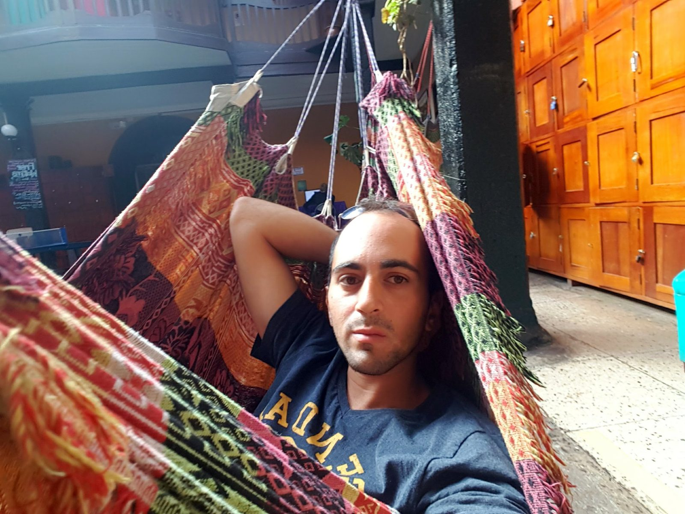
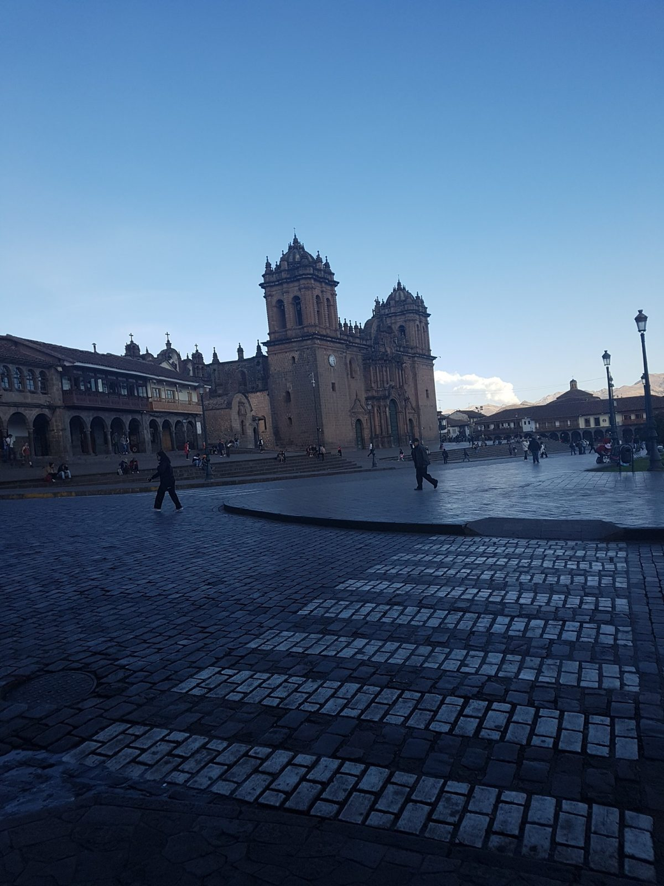
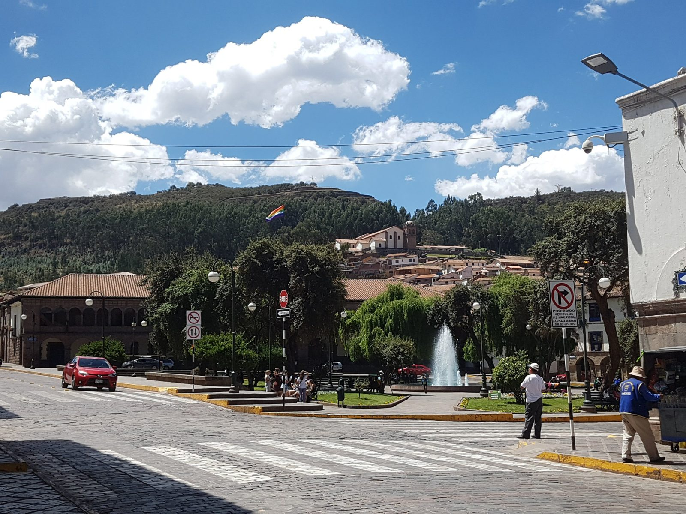
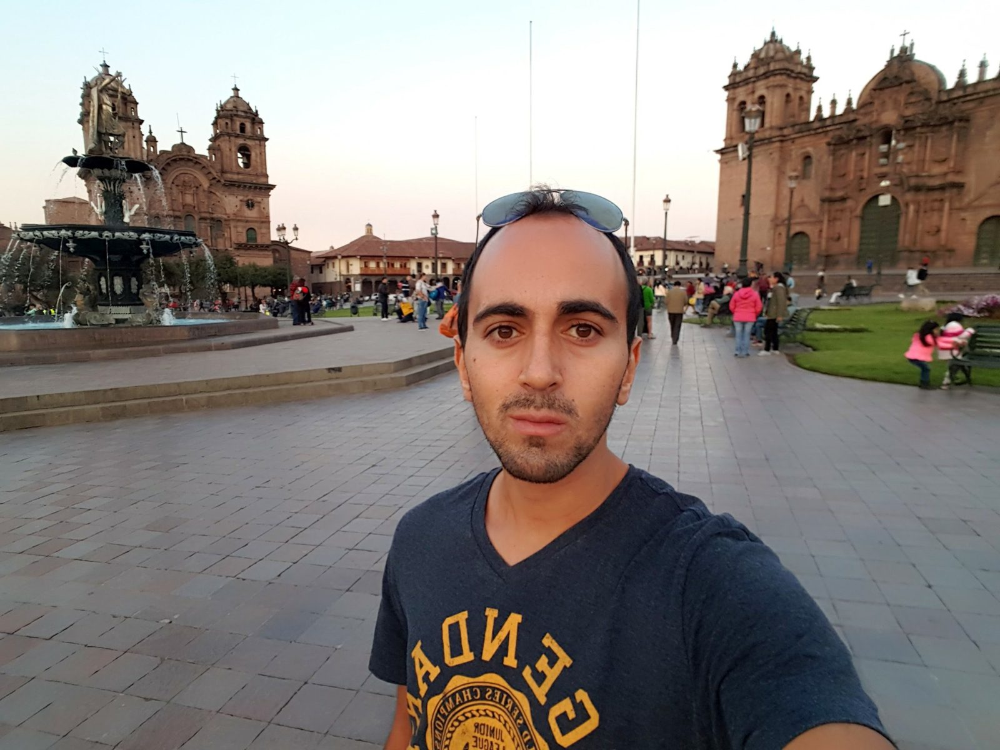
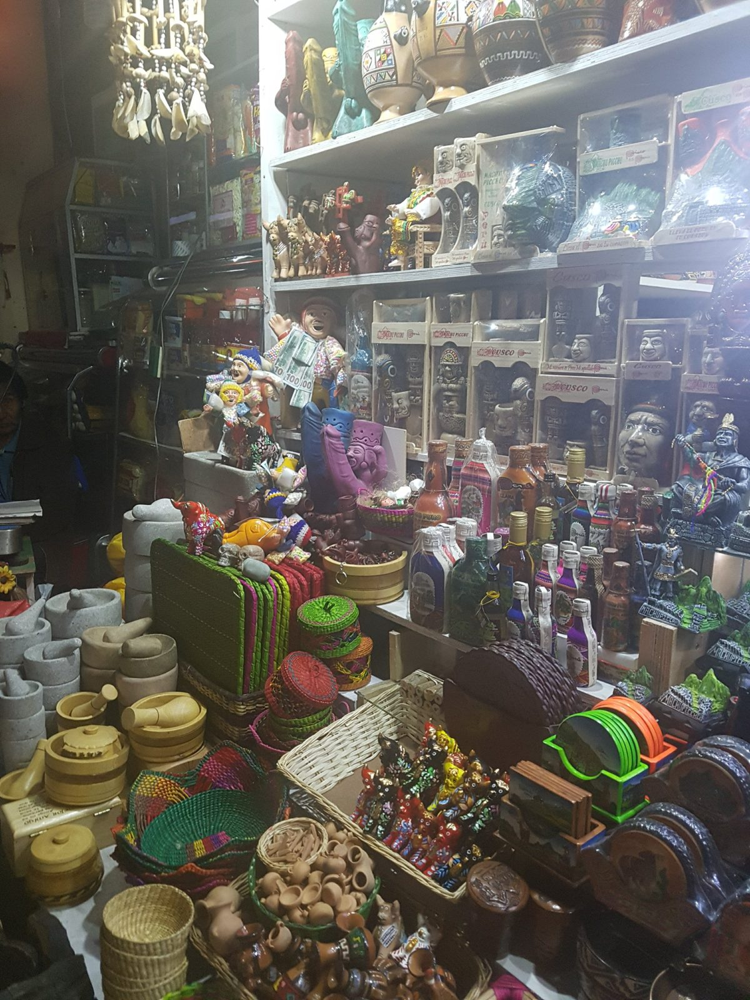
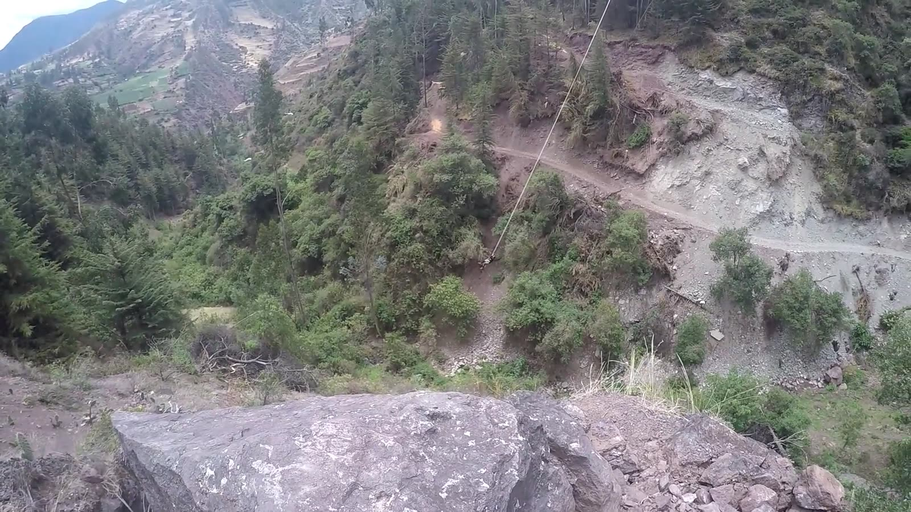

South America · Peru · Cusco
Cusco, September and October 2017
I flew from Lima, which is at sea level, straight to Cusco. The US CDC gives Cusco's elevation as about 3,350 m and puts a sleeping altitude of 2,750 to 3,400 m in its medium-risk category for altitude sickness. It advises against going to 2,750 m or higher to sleep in a single day, and it says symptoms often begin 2 to 12 hours after arrival, usually on the first night (CDC Yellow Book, April 23, 2025). It also says travellers can sometimes sleep one or two nights lower first.
I do not remember how the altitude affected me in Cusco, so this is research and not my own experience. Ask a doctor about medication before you go.
Getting there
I flew from Lima to Cusco on Friday, September 29, 2017, the day after the Huacachina dunes. I do not remember the airline or the price. Today, LATAM, Sky and JetSMART are listed as flying the route directly, in about 1 hour 20 to 1 hour 25 minutes. Fares vary with season, and flights sell out in the high season from May to August. The airport is 10 to 20 minutes from the centre by taxi (Cusco Peru, page modified April 2026). A new airport at Chinchero is planned. A February 2026 article says it is now expected in late 2027, after the original 2026 target (Voyagers, February 12, 2026).
Where I stayed
I started at Inka Wild Hostel, a hostel in the historic centre with a courtyard, hammocks, lockers and a ping-pong table. Later I moved to a hostel popular with Israelis, next to the Chabad House. I do not remember its name or the date I moved, so I will not say more.

The listing gives the address as Calle Matara 261, in the historic centre. It is still on Expedia, with 7.2 out of 10 from 10 reviews, but the newest review is from January 2020 and the page shows no prices (Expedia listing, checked November 2026). I could not confirm that it is still open, so check before you plan around it.
The days, as my photos show them
I do not have notes from these days, so this is built from my photos and their dates. By October 4 I was already heading to Machu Picchu, which has its own chapter.
- Friday, September 29: arrival, and the Plaza de Armas in the afternoon and early evening.
- Saturday, September 30: a night out at Loki, from about 23:00.
- Sunday, October 1: walking the centre, then an evening in an upstairs restaurant with a view over the city lights. I do not remember its name.
- Monday, October 2: an afternoon at the hostel.
- Tuesday, October 3: the Plaza de Armas again in the evening.
Plaza de Armas



A market

San Pedro Market is about 8 to 10 minutes' walk from the Plaza de Armas. One guide lists it as open Monday to Saturday from 6:30 to 17:00, with some stalls open until about 18:30, and Sunday until noon. My photo is from 17:56, so it fits the late stalls, but I cannot be sure. The same guide mentions meals in the food section at about 5 soles, advises haggling, and warns that it linked a salad to a stomach illness (Authentic Food Quest, undated).
Going out: Loki
On Saturday, September 30, at about 23:00, I was at Loki. I filmed a short clip, but it is dark and shaky and full of strangers, so it is not here.
Where and when: Calle Cuesta Santa Ana 601, in the historic centre. The bar and restaurant are listed as open from 7:30 to 2:00, although another page of the same site says 8:00, so confirm (Loki Cusco menu page). Its happy hours are 15:00 to 16:00, 18:00 to 19:00 and 21:00 to 22:00, but prices are not listed. The site does not say whether non-guests can come in or whether there is a cover.
One writer's view: a nightlife guide updated October 29, 2026 says Loki was once a top party hostel, closed for a while and had reopened by 2022. It adds that it "needs the people to make it fun", that the walk to it is a steep climb at altitude, and that Wild Rover is the more reliable choice (The Partying Traveler). That is one opinion. Remember that alcohol hits harder at altitude, and that the same guide advises staying within walking distance of the Plaza de Armas if you plan to drink.
Match night in the Plaza de Armas, October 10
On Tuesday, October 10, I spent the evening in a large square in Cusco. I took a short video there at 20:07, and I am almost sure it was the Plaza de Armas: the arcades and the cathedral towers match. The video is too dark and shaky to show here. It was the night of a World Cup qualifier, and the square was full of people watching on a big screen. What moved me was how much the match meant to the people around me, and how loyal they seemed to their flag and their country.
The game was Peru against Colombia at the Estadio Nacional in Lima. It ended 1-1: James Rodríguez scored for Colombia in the 55th minute, and Paolo Guerrero equalised for Peru from a free kick in the 75th. The draw sent Colombia to the 2018 World Cup, and Peru went into a play-off against New Zealand (Colombia Reports, October 10, 2017; El Comercio). I did not check the kick-off time, so I cannot say how the moment in my video fits the match.
I did not note which part of the match I watched or who organised the screen. If you are in Cusco on a night when Peru plays, the square is a place to look for this kind of crowd.
Tarzan swing and waterfall rappelling, October 12
On Thursday, October 12, I did two extreme activities near Cusco: a Tarzan swing, which I know as a Tarzan bungee, and a waterfall rappel. I booked through an agency inside the hostel where I was staying. I do not remember the agency's name, the price, the exact place or how long the drive took, except that it was not very far from Cusco. I believe we were given equipment and a safety briefing, but I do not remember the details. I did not film the rappelling.

Both activities are not for anyone afraid of heights, and not for anyone with a weak heart. They are for people who love extreme activities.
Bungee: the best-known site is Action Valley in the Poroy district, about 11 km from Cusco and a 10-minute drive from the Plaza de Armas, according to one local operator, which gives the drop as 122 m and does not list a price (De Aventura, undated). Another seller lists the drop as 120 m and the prices as US$74 for bungee, US$74 for the slingshot and US$120 for both, but its page says it no longer operates the activity, so treat those prices as outdated (Nomades). A Tripadvisor listing gives 128 m and about 2 hours with transport from Cusco, a maximum weight of 110 kg, and says the jump is not for people with heart problems, high blood pressure, recent fractures or spine problems. Its age rules conflict (16 with an adult, and "ages 12 to 40" in the header), so confirm them with the operator (Tripadvisor listing).
Rappelling: one listing offers a 6-hour canyoning tour with a rappel in the Pisac gorge, in the Sacred Valley, for US$140. It does not mention waterfalls (Cusco Peru, page modified January 31, 2025).
What I could not find: a current listing for a Tarzan swing in Cusco, so I cannot give a price for it. Ask the agency for the price, the name of the operator and the safety equipment before you book.
What this chapter does not cover
I do not have notes or photos of ticketed sites from these first days, so I will not describe prices or routes I did not check. Machu Picchu will have its own chapter.
Previous: Huacachina. Next: Inca Jungle.